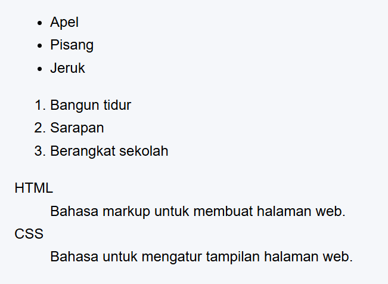

Tag di HTML adalah penanda yang digunakan untuk memberi tahu browser bagaimana konten harus ditampilkan di halaman web.Tag menjadi sebuah penanda awalan dan akhiran dari sebuah elemen di HTML.Tag dibuat dengan kurung sudut (<...>),lalu di dalamnya berisi nama tag.
| Tag | Fungsi |
|---|---|
| html | untuk memulai dokumen HTML |
| head | bagian kepala dokumen(tidak tampil langsung,tapi berisi informasi tentang web) |
| body | bagian isi utama halaman web |
| h1 sampai h6 | tag untuk membuat heading pada artikel |
| p | tag untuk membuat paragraf |
| !-- -- | tag untuk membuat komentar |
Pada web,paragraf biasanya digunakan untuk menampilkan teks atau artikel
| Tag | Fungsi |
|---|---|
| p -> Paragraf | tag untuk membuat paragraf |
| br -> Line Break | tag untuk memindah baris tanpa membuat paragraf baru |
| hr -> Horizontak Rule | tag untuk membuat garis pemisah horizontal |
| pre -> Preformatted Text | tag untuk menampilkan teks dengan format asli(spasi & baris tidak hilang) |
Tag yang dipakai untuk mengubah tampilan atau penekanan teks didalam halaman web
| Tag | Fungsi |
|---|---|
| b | Tulisan tebal |
| strong | Seperti b,tapi dengan makna penekanan |
| i | Tulisan miring |
| em | Mirip i,tapi dengan arti penekanan |
| u | Tulisan bergaris bawah |
| mark | Tulisan dengan sorotan kuning pada teks |
| small | Tulisan teks lebih kecil dari ukuran normal |
| del | Menunjukkan teks yang sudah dihapus |
| ins | Menunjukkan teks yang ditambahkan(garis bawah) |
| sup | Pangkat atas |
| sub | Pangkat bawah |
Tag struktur lanjutan yang berfungsi untuk membangun kerangka halaman web agar lebih teratur, mudah dipahami, serta ramah mesin pencari (SEO).
| Tag | Fungsi |
|---|---|
| header | Untuk mendefinisikan bagian kepala dari suatu halaman atau bagian tertentu. Biasanya berisi judul, logo, dan elemen navigasi. |
| nav | Untuk menampung kumpulan tautan navigasi. Bagian ini memudahkan pengguna berpindah ke halaman atau bagian lain dalam website. |
| main | Digunakan untuk menandai isi utama dari suatu halaman web. |
| section | Dipakai untuk membagi konten ke dalam bagian-bagian tematis. Setiap bagian biasanya diawali dengan judul (heading). |
| article | Digunakan untuk konten yang dapat berdiri sendiri, seperti artikel berita, posting blog, atau ulasan. |
| aside | Digunakan untuk menampilkan informasi tambahan yang mendukung isi utama, misalnya iklan, catatan, atau tautan terkait. |
| footer | Berfungsi untuk mendefinisikan bagian kaki halaman atau bagian tertentu. Biasanya berisi informasi hak cipta, kontak, atau tautan tambahan. |
Salah satu elemen penting dalam HTML adalah hyperlink atau tautan. Hyperlink memungkinkan pengguna untuk berpindah dari satu halaman ke halaman lain, baik di dalam website yang sama maupun ke website lain. Untuk membuat hyperlink digunakan tag (anchor).
| Tag | Fungsi |
|---|---|
| src | Menentukan lokasi atau alamat file gambar. |
| alt | Menyediakan teks alternatif apabila gambar tidak dapat ditampilkan. |
| width & height | Menentukan ukuran gambar dalam satuan piksel. |
| tittle(opsional) | Menampilkan teks tambahan ketika kursor diarahkan ke gambar. |
